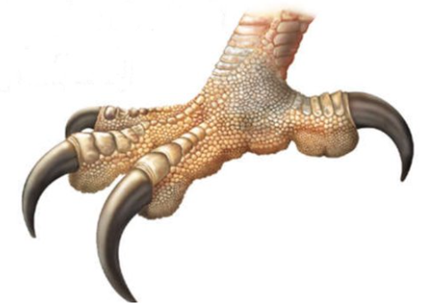

Harpy Eagle - Harpia harpyja
The harpy eagle has the biggest talons of any eagle species. They are about 7–10 cm long, or about the same size of a grizzly bear’s claws. This allows them to lift large prey equal to their own body weight clear off the ground.
